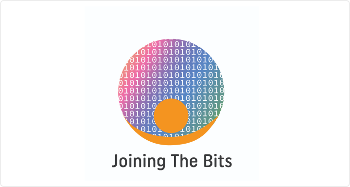
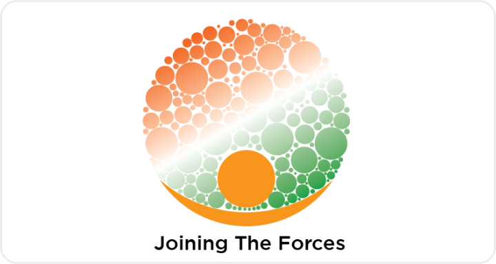
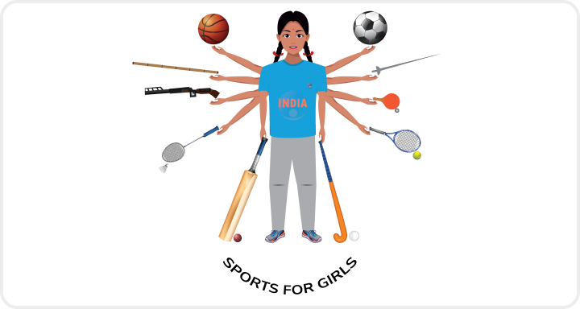

Home
Programs
Impact
About
Contact
DONATE NOW
Our programs
We specialise in LIVE learning experiences designed to help you advance your creative career & have fun while doing it.

Joining The Bits
Joining the Bits is a 4 year free of cost online engineering program on par with engineering curriculum of A-lister university.

Joining The Force
Joining the Forces is an program which helps students realise their dream of joining the Armed Forces, Navy & Airforce

Sports For Girls
Sports for girls envisions providing opportunities to 2000 girls play a sport of their choice
Joining the Sapta Swaras
Joining the Sapta swaras is a free carnatic music learning program. Currently the focus is on carnatic vocals, violin, flute and bharatanatyam.